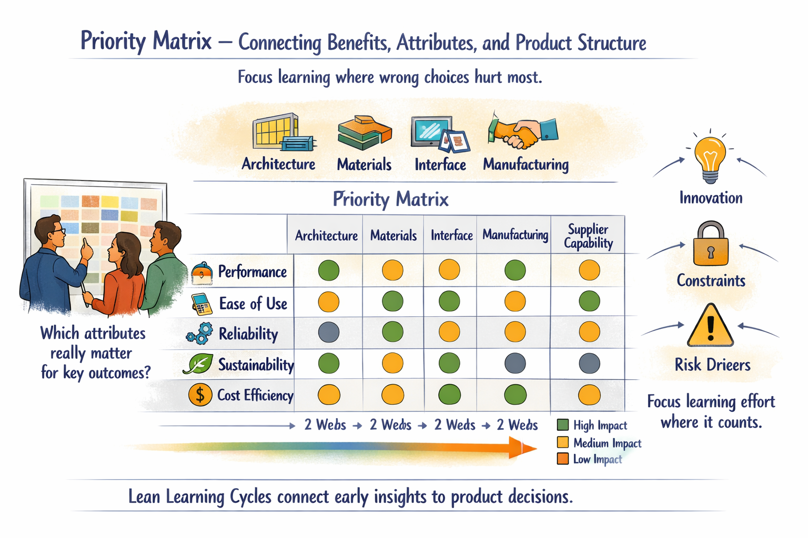

Block 1
Pretotype and Product Attributes
A pretotype is a one- or two-page “fake brochure” that describes your product as if it already exists and customers can order it tomorrow. It focuses on customer outcomes — what changes in their world — rather than internal features or technology, and becomes the north star for later learning and experiments.
- Simple headlines, benefits, and a sketch or photo-like mock-up.
- A few imagined quotes from users, written in their voice.
- Technical jargon avoided wherever possible.
Product attributes and a simple Product Breakdown Structure (PBS) translate that pretotype into a technical view: buckets of functionality, performance ranges, constraints, standards, and key interfaces. Together, these give you a shared picture of what customers expect on the outside and how the system might be structured on the inside — without locking into detailed specifications too early.
Block 2
Priority Matrix
The priority matrix connects customer benefits from the pretotype to product attributes and PBS elements. Rows are benefits, columns are attributes; cells show where an attribute significantly contributes to a benefit.

For coaches and teams, this simple grid answers questions like: which attributes really matter for our most important customer outcomes? Where is there room for innovation? Which subsystems will likely drive risk or late changes if we ignore them?
The priority matrix helps you avoid spreading early learning effort too thin. Instead of trying to learn everything at once, you focus on attributes that strongly influence top benefits — the places where a wrong choice will hurt the most.
Block 3
Key Decisions and Knowledge Gaps
In the overlap between important benefits and critical attributes, you find your key decisions — choices that will lock in cost, quality, and customer experience. These are high-impact, high-unknown decisions: costly to change later, and not yet supported by solid knowledge.
For each key decision, the team asks:
- What is keeping us from deciding today?
- What is new, uncertain, or irreversibly expensive about this choice?
- Where are we pushing boundaries in technology, customer value, or operations?
The answers become knowledge gaps — specific questions that need answers, such as: “Can we achieve this stiffness in this envelope without exceeding cost and weight targets?” These gaps are the basic “tickets” in your learning system: what you plan, execute, and close inside Lean Learning Cycles.
Block 4
Increment Plan
An increment plan stretches over roughly 8–12 weeks of early development and acts as your learning roadmap. It sequences key decisions and knowledge gaps in a way that respects dependencies and risk, without pretending to be a detailed schedule.
- A simple timeline with 4–6 learning cycles.
- Key decisions placed roughly where you hope to enable them.
- Knowledge gaps mapped to cycles, showing when you intend to address them.
- A short list of major risks and how they link to gaps and decisions.
The increment plan is meant to change. After each integration event, you update it based on what you learned. For coaches, this plan is a powerful visual tool: it shows leaders that the team is not just “doing sprints” but deliberately buying down risk and enabling specific decisions.
Block 5
Iteration Plan
The iteration plan shrinks the roadmap down to a single cycle, often two weeks long. It answers, in plain language: “What are we trying to learn in the next two weeks, and how will we do it?”
It typically includes 2–4 knowledge gaps chosen from the increment plan, each with a clear problem statement and hypothesis, one or more experiments with defined success criteria, and tasks, owners, and rough effort — all sized to fit the timebox.
The planning event is short and focused, often 1–2 hours with the cross-functional team: start from the increment plan, choose a small subset of gaps that move key decisions forward, and design experiments that are fast and cheap enough to run in the cycle.
Block 6
Learning Cycle Execution
Execution is where experiments happen — but in Lean Learning Cycles, execution is as much about discipline as it is about activity.
- Daily or regular short check-ins where the team reviews what was done, what will be done, and what was learned.
- Focus on limits: not just “does it work?” but “where does it break?”, “what range is feasible?”, “how sensitive is it?”
- Simple visualization of work in progress: boards showing which experiments are planned, running, or being analysed, and which K Briefs are in draft.
“The heartbeat is learning, not task completion for its own sake.”
The coach’s role here is to protect the timebox, help the team frame surprises as learning rather than failure, and encourage completion of K Brief drafts during the cycle, not as an afterthought.
Block 7
Visual Knowledge and Integration Events
Each cycle ends with an integration event — a time-boxed review where the team and key stakeholders step back from individual tasks to see the whole picture. The focus is not status, but knowledge and decisions.
The team discusses what they actually learned, which knowledge gaps are now closed or still open, whether they have learned enough to make any of the key decisions in scope, and what this means for the funnel.
- Inputs: Knowledge Briefs (one-page A3s), trade-off curves, limit curves, causal diagrams, and updated PBS or risk lists.
- Outputs: Decisions made, options eliminated, updated increment plan, refined visual knowledge.
Over time, these K Briefs and visuals form a reusable knowledge base — a living library of trade-offs, limits, and insights that make each new project start stronger than the last.